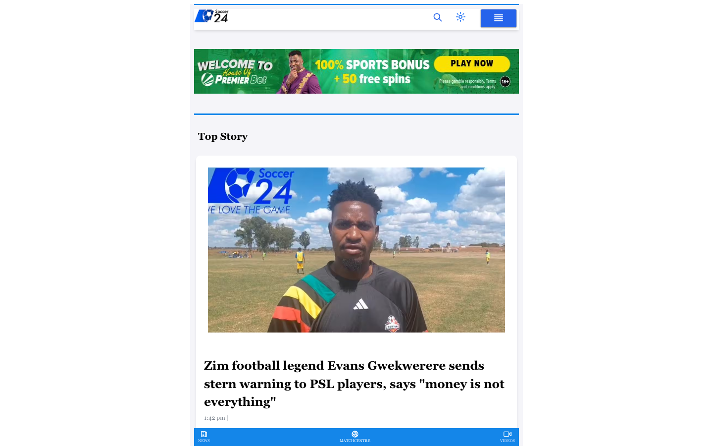

Overview
| Domain | soccer24.co.zw |
|---|---|
| Category | other |
| Sector tags | media |
| Theme | s24-theme-2024 |
| Tranco rank | 508799 |
| WP detection score | 100 / 100 |
| WP version | 6.9.4 |
| CDN | — |
| IP | 185.124.160.26 |
| Homepage size | 192 KB |
| Verified at | 2026-05-01T11:28:50.486781+00:00 |
Hosting fingerprint
| Host panel | plesk |
|---|---|
| Server header | nginx/1.26.1 |
| TLS cert issuer | — |
| Reverse PTR | web1-soccer24.cust.deployvm.net |
Evidence: path:/plesk-stat/login.php3->plesk
Plugins detected (3)
WordPress signals
| Signal | Weight |
|---|---|
| meta_generator_wp | +30 |
| wp_json_valid | +25 |
| wp_content_path | +15 |
| wp_includes_path | +15 |
| rss_wp_generator | +10 |
| wp_login_200 | +10 |
| readme_html_wp | +8 |
| plugin_path | +5 |
| theme_path | +5 |
| wp_body_class | +5 |
Discovery sources
| Source | Hint |
|---|---|
| cc-cdx | CC-MAIN-2026-17 |
| tranco | rank=508799 |